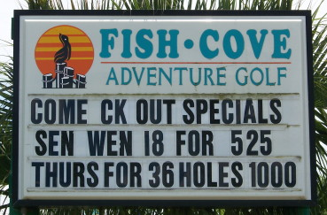
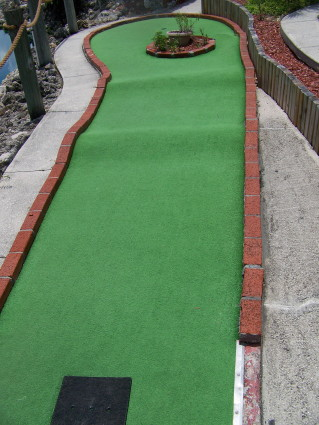

| X:
Fish Cove 4949 Tamiami Trail, Charlotte Harbor
(just north of the bridge from Punta Gorda)
(941) 627-5393, web site
 | 
| Price: $9.50 for 18 holes,
$13.50 for 36 holes Number of Courses: 2 Upkeep: A Originality: D Hole-in-One Difficulty: Medium Par Difficulty: Very Hard Music: None
This is a beautiful course overlooking Charlotte Harbor. The course had too many boring holes with some topography for my taste, though that meant the course was one of the hardest I've ever played. Of course we asked to play the more challenging of the two courses - perhaps mere mortals could succeed on the other course. My favorite part of the course was the rare African lizard we saw while playing. Come for the views, and don't keep score. |